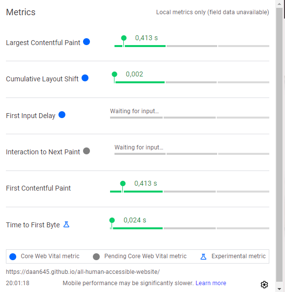
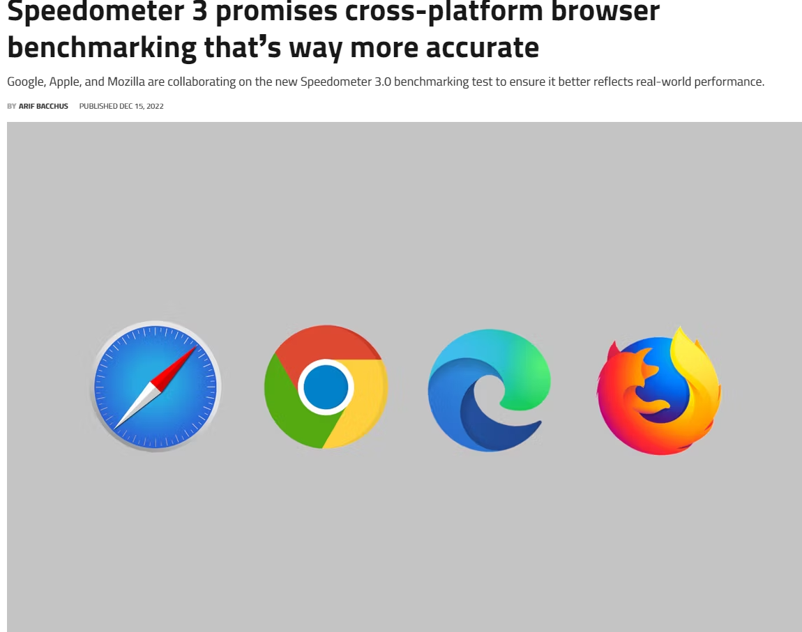
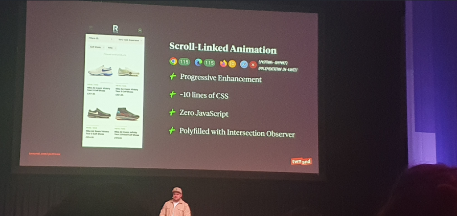
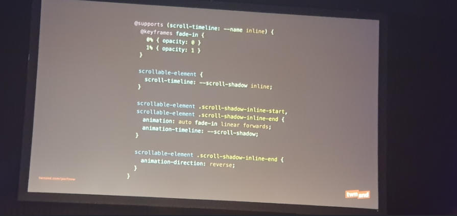
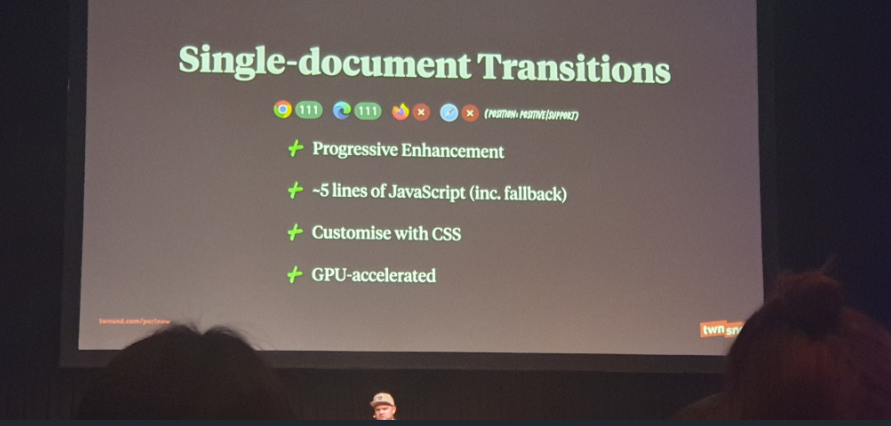
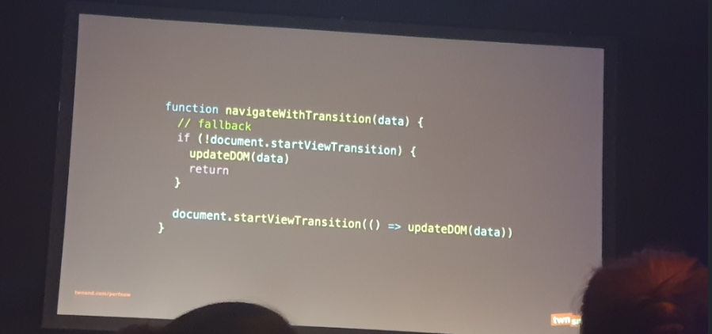

We Love Web
Deze pagina gaat over de We Love Web en de talks die ik heb gevolgd van verschillende developers die vertellen over hun passie voor code en het web.
Deze pagina gaat over de We Love Web en de talks die ik heb gevolgd van verschillende developers die vertellen over hun passie voor code en het web.
Yolijn vertelde hoe belangrijk het is om een design system te hebben. Als bedrijven zich daaraan houden, maakt het voor developers makkelijker om te werken. Zij heeft momenteel samen met haar co-owner het bedrijf Frameless opgericht en werkt samen met de gemeente van Utrecht, waar zij het NL design system hebben gemaakt. In het NL design system zitten alle componenten die worden gebruikt door de gemeente Utrecht en ook door andere gemeentes binnen Nederland. Ze werken allemaal samen en bespreken ook wat ze beter kunnen doen met betrekking tot hun componenten-galerij, oftewel het NL design system. Daarin vind je huisstijlen voor kleuren, hoe een button eruit moet komen te zien, hoe groot een font-size moet zijn, enzovoort.
Binnen de community werken zij ook met een estafettemodel. Het estafettemodel van NL Design System is een aanpak om samen de beste en meest bruikbare componenten, patronen en richtlijnen te maken. Om niet telkens "component", "patroon" of "richtlijn" te zeggen, noemen zij dit een onderdeel van NL Design System. Een nieuw onderdeel volgt het estafettemodel en beweegt zich in samenwerking tussen het kernteam en de community van "Help Wanted" naar "Community", naar "Candidate", en belandt, als het helemaal af en herbruikbaar is, in de "Hall of Fame". Ze houden ook echt rekening met het feit dat elke organisatie een eigen huisstijl heeft. Buttons kunnen verschillende kleuren hebben, toegankelijkheid, kleurcontrast, code en design sync zodat de Figma en code overeenkomen. Ze vertelden dat er soms ook content schrijvers zijn voor buttons, teksten, etc. Ze denken na over wat er in de content geplaatst moet worden. En dat het belangrijk is om goede tests te doen op websites wat betreft toegankelijkheid en foutmeldingen.
Yolijn vertelde dat je niet voorspelbaar moet zijn met de naamgeving voor classes of ID's. Maar het is handiger om bekende namen te kiezen die al bestaan. Verzonnen namen zijn moeilijk te vinden als je conventies afspreekt en daar aanhoudt, wat het werken veel makkelijker maakt.
NL Design System wil componenten uit de community herbruikbaar maken voor de hele overheid. Daarom hebben de componenten van het NL Design System van zichzelf geen huisstijl. Iedere organisatie kan zijn eigen huisstijl op de componenten toepassen. Om dat voor elkaar te krijgen maken zij gebruik van 'design tokens'. Design tokens zijn ontwerpkeuzes die je vastlegt als data in de vorm van een 'naam' met een 'waarde'.
De NL Design System-architectuur is bedacht om organisaties die op het eerste gezicht weinig raakvlakken hebben, de mogelijkheid te bieden samen te werken aan uitdagingen die veel tijd en expertise vergen, zoals het maken van toegankelijke websites en het laten werken van teams binnen één organisatie met hun framework naar keuze. Daarvoor zorgen zij ervoor dat de componenten herbruikbaar zijn in uiteenlopende technieken, met doorlooptijd voor nieuwe componenten en hergebruik voor andere huisstijlen.
Het mooie van de componenten die gemaakt worden door de community binnen het NL Design Team is dat zij ook met developers in het buitenland samenwerken. Daar bespreken zij nieuwe tools of bekijken ze bestaande tools die verbeterd kunnen worden. Dat is mooi, want de componenten hebben ook een openbare licentie genaamd de EUPL, wat staat voor de Europese Unie Public License.
Op 2 november 2023 ben ik bij de Zuiderdijk geweest voor het evenement Performance.now, dat gefundeerd wordt door grote bedrijven als Google, Mozilla, Speedkit, etc. Het is een interessant evenement omdat ze de nadruk leggen op het belang van een website die snel laadt. Een trage website is niet goed voor de gebruiker, omdat het niet leuk is om een website te gebruiken die niet goed functioneert. Als iemand iets wil kopen, wil hij dat snel doen: items zoeken, selecteren en betalen, maar het moet simpel en snel zijn. Bedrijven realiseren zich ook dat trage websites hun geld kosten, omdat mensen geen interactie willen hebben met een trage functionaliteit. Er waren sprekers genaamd Bas Schouten, Nischu Goel, Ryan Townsend en een paar andere sprekers die verschillende manieren hadden laten zien hoe je een website kunt testen op haar laadsnelheid. Nischu Goel legde uit dat je bijvoorbeeld een plugin kunt gebruiken in Chrome genaamd Web Vitals, waarmee je de snelheid van je website kunt testen. Dit is een foto van Web Vitals, waarmee je websites kunt testen op laadsnelheid en interactiviteit.
Bas Schouten werkt aan Speedometer 3, een benchmark waarmee je kunt zien hoe snel de laadtijd van een website is. Hij werkt hier al jaren aan. Vervolgens is hij in samenwerking gegaan met Apple, Google, Mozilla en Microsoft, omdat zij er allemaal mee eens waren dat er een probleem is met de laadtijd van websites op de browser.
 > Een grote reden daarvoor is ook dat heel veel mensen het internet gebruiken. Dit is op zich geen groot probleem, maar het probleem is dat mensen nog oude telefoons gebruiken om het web te browsen. Telefoons zijn de meest gebruikte devices als het gaat om browsen op het internet. Ze zijn makkelijk te gebruiken: je hebt ze in je handen, typt wat dingen in en je surft. Je hoeft niet achter een laptop, computer of een grote tablet te gaan zitten. Omdat zoveel mensen een telefoon gebruiken, heeft Bas Schouten met deze bedrijven in samenwerking geprobeerd een oplossing te creëren. Nu is Speedometer versie 4 in de werking, waarmee je de site kunt analyseren en sneller kunt maken. Maar wat zijn oplossingen hiervoor? Minder divs, zoals verteld door spreker Ryan Townsend, of minder JavaScript te gebruiken. Townsend gaf aan dat JavaScript zwaar is voor websites en dat er soms onnodig veel JavaScript wordt gebruikt, wat de laadtijd van een website kan verlengen. Er was een website met 50.000 regels code die uiteindelijk rond de 600 werd door de code aan te passen en meer HTML en CSS te gebruiken. Na het testen was de website veel sneller en had deze een betere gebruikerservaring. Ryan TownSend had wat code dat handig is te gebruiken als je een snelle website wilt het zijn kleine css regels met bijna tot geen Javascript. Een scroll-gekoppelde animatie voor een webshop, waarbij de afbeelding van links naar rechts beweegt en twee verschillende afbeeldingen toont. Hiervoor is geen JavaScript gebruikt en slechts 10 CSS-regels.  of minder javascript een funcionaliteit met een transitie dat javascript code heeft van maar 5 regels.
 Als eerstejaars student was het best wel veel nieuwe informatie, maar wel interessant om te weten. In de toekomst kan ik het zelf uitproberen en mijn eigen website testen op laadsnelheid en interactie. Zo kan ik goede, gebruiksvriendelijke websites neerzetten voor toekomstige gebruikers.